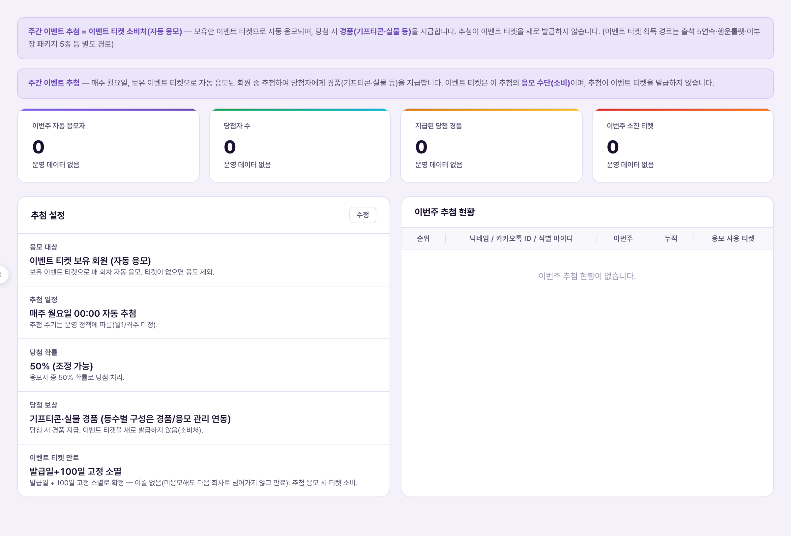
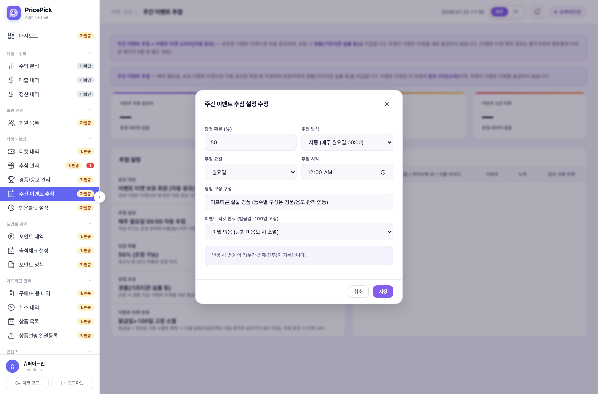

주간 이벤트 추첨 = 이벤트 티켓의 "소비처"다. 회원이 보유한 이벤트 티켓으로 매주 자동 응모되고, 당첨되면 기프티콘·실물 등 경품을 받는다. 이 화면은 이벤트 티켓을 새로 발급하지 않는다 — 이벤트 티켓을 쓰는(소비하는) 쪽이지, 주는 쪽이 아니다. 이벤트 티켓을 얻는 경로는 출석 5일 연속 보너스·행운룰렛(하루 1회, 6칸 확률판)·이부장 패키지 5종 등 전부 별도 화면이다.Bốc thăm sự kiện hàng tuần = "nơi tiêu" vé sự kiện. Hội viên đang sở hữu vé sự kiện sẽ được tự động tham gia bốc thăm hàng tuần, và nếu trúng thưởng sẽ nhận quà (gift voucher·quà vật lý...). Màn hình này không phát hành vé sự kiện mới — đây là nơi tiêu vé, không phải nơi cấp vé. Các cách để có vé sự kiện là thưởng điểm danh 5 ngày liên tiếp·vòng quay may mắn (1 lần/ngày, vòng quay 6 ô xác suất)·gói "Phó phòng Lee" 5 loại... đều là màn hình riêng biệt.

화면 상단에는 KPI 카드 4개가 있다 — 이번주 자동 응모자·당첨자 수·지급된 당첨 경품·이번주 소진 티켓. 데모 화면에서는 전부 0이며, 캡션에 "운영 데이터 없음"이라고 명시돼 있다 — 실제 운영이 시작되기 전이라 값이 쌓이지 않은 것뿐, 화면 오류가 아니다.Đầu màn hình có 4 thẻ KPI — Người tự động tham gia tuần này·Số người trúng thưởng·Quà đã trao·Vé đã tiêu tuần này. Trên demo tất cả đều là 0, và chú thích ghi rõ "Không có dữ liệu vận hành" — chỉ vì vận hành thực tế chưa bắt đầu nên chưa có dữ liệu tích lũy, không phải lỗi màn hình.
| 요소Thành phần | 의미Ý nghĩa | 바꾸면 생기는 일Điều gì xảy ra khi thay đổi |
|---|---|---|
| 응모 대상Đối tượng tham gia | 이벤트 티켓 보유 회원 (자동 응모). 보유 이벤트 티켓으로 매 회차 자동 응모되며, 티켓이 없으면 응모 제외된다.Hội viên đang sở hữu vé sự kiện (tự động tham gia). Mỗi kỳ tự động tham gia bằng vé sự kiện đang có, không có vé thì bị loại khỏi đợt tham gia. | 기준을 바꾸면 응모 자격 자체가 달라짐 — 사전 공지 필요Nếu đổi tiêu chuẩn thì tư cách tham gia thay đổi hoàn toàn — cần thông báo trước |
| 추첨 일정Lịch bốc thăm | 매주 월요일 00:00 자동 추첨. 단, 화면 캡션 자체에 "추첨 주기는 운영 정책에 따름(월1/격주 미정)"이라고 명시돼 있어 매주/월1/격주 중 최종 주기가 아직 확정되지 않았다.Tự động bốc thăm vào 00:00 mỗi thứ Hai. Tuy nhiên chú thích trên màn hình ghi rõ "Chu kỳ bốc thăm tùy theo chính sách vận hành (chưa chốt tháng 1 lần/2 tuần 1 lần)" — nghĩa là chu kỳ cuối cùng (tuần/tháng/2 tuần) vẫn chưa được chốt. | 주기를 바꾸면 응모자 기대 당첨 빈도가 달라짐 — 공지 필수Nếu đổi chu kỳ thì tần suất trúng thưởng kỳ vọng của người tham gia thay đổi — bắt buộc phải thông báo |
| 당첨 확률Xác suất trúng thưởng | 50% (조정 가능). 응모자 전원에게 동일하게 적용되는 고정 확률이며, 응모자 중 50% 확률로 당첨 처리한다.50% (có thể điều chỉnh). Là xác suất cố định áp dụng như nhau cho toàn bộ người tham gia, xử lý trúng thưởng với xác suất 50% trong số người tham gia. | 퍼센트를 올리면 당첨자 수·지급해야 할 경품 수량이 함께 늘어남 — 경품 재고와 같이 검토 필요Nếu tăng phần trăm thì số người trúng·số lượng quà cần cấp cũng tăng theo — cần xem xét cùng với tồn kho quà |
| 당첨 보상Phần thưởng trúng giải | 기프티콘·실물 경품 (등수별 구성은 경품/응모 관리 연동). 당첨 시 경품을 지급하며, 이벤트 티켓을 새로 발급하지 않는다(소비처).Gift voucher·quà vật lý (cấu thành theo hạng liên kết với Quản lý quà/tham gia). Khi trúng thưởng sẽ cấp quà, không phát hành vé sự kiện mới (đây là nơi tiêu vé). | 경품 구성을 바꾸면 경품/응모 관리 쪽 재고·회차 매핑도 함께 갱신해야 함Nếu đổi cấu thành quà thì tồn kho·ánh xạ theo kỳ ở phía Quản lý quà/tham gia cũng phải cập nhật theo |
| 이벤트 티켓 만료Hết hạn vé sự kiện | 발급일+100일 고정 소멸. 이월 없음 — 미응모해도 다음 회차로 넘어가지 않고 만료되며, 추첨 응모 시 티켓이 소비된다.Hết hạn cố định là ngày phát hành + 100 ngày. Không chuyển tiếp — dù không tham gia thì vé cũng hết hạn chứ không chuyển sang kỳ sau, và khi tham gia bốc thăm thì vé bị tiêu hao. | 만료 기간을 바꾸면 이미 발급된 티켓의 소멸 시점도 소급 영향받을 수 있음 — 데이터 마이그레이션 검토 필요Nếu đổi thời hạn thì thời điểm hết hạn của các vé đã phát hành trước đó cũng có thể bị ảnh hưởng hồi tố — cần xem xét việc di chuyển dữ liệu |
정책서 원문이 말하는 방식은 "응모한 티켓 수에 비례하는 추첨(비복원 추첨) + 관리자 확정 실행"이다 — 쉽게 말해 티켓을 많이 쓸수록 당첨 확률이 높아지고, 추첨 관리 페이지의 다등급 추첨과 비슷한 방식이다. 반면 지금 화면은 티켓 개수와 무관하게 응모자 전원이 같은 50% 확률을 적용받는 구조로 보인다. 어느 쪽이 맞는지는 이 문서에서 임의로 정하지 않는다.Cách mà tài liệu chính sách gốc mô tả là "bốc thăm tỷ lệ theo số vé đã dùng để tham gia (bốc thăm không hoàn lại) + Vận hành viên xác nhận thực thi" — nói dễ hiểu là dùng càng nhiều vé thì xác suất trúng càng cao, tương tự cách bốc thăm nhiều hạng ở trang Quản lý bốc thăm. Trong khi đó màn hình hiện tại có vẻ là cấu trúc mà toàn bộ người tham gia đều áp dụng cùng xác suất 50%, không phụ thuộc số lượng vé. Tài liệu này không tự ý chọn phương án nào là đúng.
"추첨 설정" 카드에는 "수정" 버튼이 있고, 아래에는 "이번주 추첨 현황" 표(순위/닉네임·카카오톡ID·식별아이디/이번주/누적/응모 사용 티켓)가 있다. 데모에는 데이터가 없어 "이번주 추첨 현황이 없습니다"로 표시된다.Ở thẻ "Cài đặt bốc thăm" có nút "Sửa", và bên dưới có bảng "Tình hình bốc thăm tuần này" (Hạng/Nickname·ID Kakao Talk·ID định danh/Tuần này/Lũy kế/Vé đã dùng để tham gia). Trên demo chưa có dữ liệu nên hiển thị "Không có tình hình bốc thăm tuần này".

"수정" 버튼을 누르면 뜨는 "주간 이벤트 추첨 설정 수정" 모달이다. 항목은 당첨 확률(%)·추첨 방식(자동/매주 월요일 00:00)·추첨 요일·추첨 시각·당첨 보상 구성(텍스트)·"이벤트 티켓 만료(발급일+100일 고정)" 드롭다운(현재 값: "이월 없음(당회 미응모 시 소멸)")이며, 하단 안내 문구에 "변경 시 변경 이력(누가·언제·전후)이 기록됩니다"라고 돼 있다.Đây là modal "Sửa cài đặt bốc thăm sự kiện hàng tuần" hiện ra khi bấm nút "Sửa". Các trường gồm Xác suất trúng thưởng(%)·Hình thức bốc thăm (tự động/00:00 thứ Hai hàng tuần)·Thứ bốc thăm·Giờ bốc thăm·Cấu thành phần thưởng (dạng văn bản)·dropdown "Hết hạn vé sự kiện (cố định phát hành+100 ngày)" (giá trị hiện tại: "Không chuyển tiếp (hết hạn nếu kỳ này không tham gia)"), và dòng ghi chú bên dưới ghi "Khi thay đổi, lịch sử thay đổi (ai·khi nào·trước sau) sẽ được ghi lại".
| 상황Tình huống | 운영자가 하는 일Việc Vận hành viên làm | 회원에게 생기는 일Điều xảy ra với hội viên |
|---|---|---|
| 정상 주간 추첨Bốc thăm hàng tuần bình thường 매주 월요일 자동 진행Tự động diễn ra mỗi thứ Hai | 추첨 후 "이번주 추첨 현황" 표에서 당첨자·지급 경품 확인Sau bốc thăm, kiểm tra người trúng·quà đã cấp ở bảng "Tình hình bốc thăm tuần này" | 당첨자는 경품 지급 대상으로 확정. 낙첨자는 응모에 쓴 이벤트 티켓만 소비되고 별도 보상 없음Người trúng được xác nhận là đối tượng nhận quà. Người không trúng chỉ bị tiêu hao vé sự kiện đã dùng tham gia, không có thưởng khác |
| 당첨 확률 조정Điều chỉnh xác suất trúng thưởng 경품 재고·예산에 맞춰 확률 변경Đổi xác suất theo tồn kho quà·ngân sách | "주간 이벤트 추첨 설정 수정" 모달에서 당첨 확률(%) 값 변경 후 저장Đổi giá trị Xác suất trúng thưởng(%) trong modal "Sửa cài đặt bốc thăm sự kiện hàng tuần" rồi lưu | 다음 회차 추첨부터 새 확률 적용. 변경 이력(누가·언제·전후)이 기록됨Áp dụng xác suất mới từ kỳ bốc thăm tiếp theo. Lịch sử thay đổi (ai·khi nào·trước sau) được ghi lại |
| 이벤트 티켓 만료Vé sự kiện hết hạn 발급일+100일 도달, 미응모 상태Đạt phát hành+100 ngày, chưa dùng để tham gia | 별도 개입 없음 — 고정 만료 정책이 자동 적용Không can thiệp riêng — chính sách hết hạn cố định tự động áp dụng | 100일 안에 응모하지 않은 이벤트 티켓은 자동 소멸(이월 없음)Vé sự kiện không được dùng để tham gia trong 100 ngày sẽ tự động hết hạn (không chuyển tiếp) |
데모 화면의 KPI 4개(자동 응모자·당첨자 수·지급 경품·소진 티켓)와 "이번주 추첨 현황" 표는 전부 0/빈 상태다. 실제 운영이 시작되지 않아 쌓인 데이터가 없는 것이며, 데모 CMS는 실제로 매주 월요일 00:00에 추첨을 돌리지 않는다 — 설정값 저장까지만 동작한다.4 thẻ KPI của demo (người tự động tham gia·số người trúng·quà đã cấp·vé đã tiêu) và bảng "Tình hình bốc thăm tuần này" đều là 0/trống. Đây là vì vận hành thực tế chưa bắt đầu nên chưa có dữ liệu tích lũy, và CMS demo thực ra không chạy bốc thăm vào 00:00 mỗi thứ Hai — chỉ hoạt động đến mức lưu giá trị cài đặt.
실제 CMS 사이드바에서 이 메뉴의 정책 확정 배지는 확인중으로 표시돼 있다. 위에서 짚은 확률 모델 불일치(정책서: 비례 확률 vs 화면: 고정 50%)가 그 이유일 가능성이 높다 — 두 문서가 다른 방식을 말하는 채로는 "확정" 배지를 붙이기 어렵기 때문이다. 추첨 주기(매주/월1/격주)도 같은 이유로 미확정 상태다.Trên sidebar CMS thực tế, badge xác nhận chính sách của menu này đang hiển thị Đang xác nhận. Sự không khớp về mô hình xác suất đã nêu ở trên (tài liệu chính sách: xác suất tỷ lệ vs màn hình: cố định 50%) nhiều khả năng là lý do — vì khi hai tài liệu nói hai cách khác nhau thì khó gắn badge "Đã xác nhận". Chu kỳ bốc thăm (tuần/tháng/2 tuần) cũng đang ở trạng thái chưa chốt vì lý do tương tự.